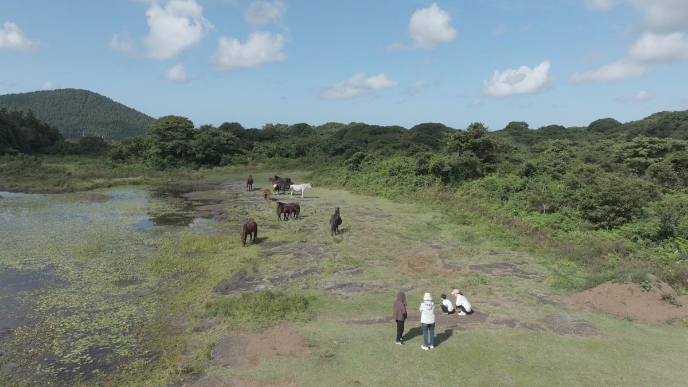

코스 한가운데 자리한 연못. 물에 비친 하늘과 오름이 가장 좋은 포토스팟입니다.

ABOUT
제라진은 제주 방언으로 "제대로, 진짜로"를 뜻합니다. 13만 평 사유지 초원과 곶자왈에서, 포장되지 않은 길만 달립니다.
THE NAME
제라진은 제주 방언에서 온 말입니다. "제대로", "진짜로". 매끈하게 포장된 테마파크 도로가 아니라, 사람 손이 거의 닿지 않은 날것 그대로의 제주를 보여주겠다는 뜻입니다.
그래서 제라진의 코스에는 아스팔트가 없습니다. 흙길과 돌길, 비가 오면 생기는 웅덩이와 진흙, 그리고 말들이 다니며 자연히 다져놓은 길이 전부입니다.

THE LAND
코스 한가운데 자리한 연못. 물에 비친 하늘과 오름이 가장 좋은 포토스팟입니다.

드넓은 대지에 풀어놓은 말 무리. 코스를 돌다 마주치면 차를 세우고 기다립니다.
제주의 허파라 불리는 숲. 좁은 길을 지날 때 나뭇가지가 차창을 스칩니다.

시야가 트이는 구간. 속도감이 가장 크게 느껴지는 곳입니다.
SUSTAINABILITY
코스를 만들기 위해 곶자왈의 나무를 베지 않았습니다. 방목된 말들이 다니며 자연히 다져진 길을 그대로 따라 코스를 설계했습니다. 오프로드가 자연을 파괴하는 레저라는 오해를 받지 않도록, 정해진 코스 밖으로는 달리지 않습니다.
점선 = 업체 확정 전 플레이스홀더
값은 assets/js/fact.js 한 곳에서 관리